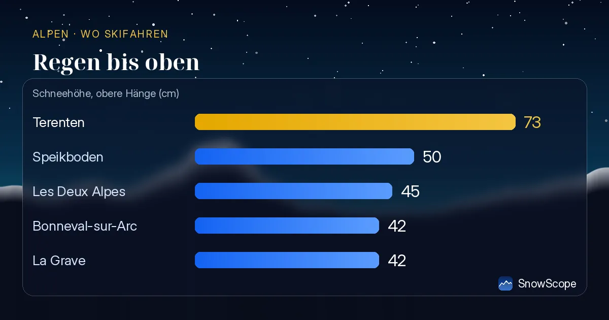

Terenten 73 cm: Regen bis oben
Terenten führt die erfassten Skigebiete mit 73 cm auf höheren Hängen an. Die Nullgradgrenze steigt am Donnerstag auf 2.970 m und bringt Regen bis ganz oben auf 1.381 m.
Die Live-Schneeprognose für Terenten in der SnowScope-AppSchneehöhen, Pulverschnee-Alarme und 3D-Karte, gratis.
Terenten jetzt: geschätzt 73 cm, aber schwer zu verifizieren
Terenten führt mit geschätzten 73 cm auf höheren Hängen bei 1.308 m Höhe. Das neueste Satellitenbild vom 1. November war unklar – Wolkenbedeckung oder schlechte Auflösung – daher verlassen wir uns auf unser Schneemodell basierend auf regionalen Temperatur- und Niederschlagsdaten.
Die nächste Schneestation (Fadner Alm, 2.155 m, 11,9 km entfernt) maß 2 cm am selben Tag, was konsistent mit Schnee ist, aber dünn. Zum Vergleich: Speikboden im Süden hält 50 cm und war deutlich sichtbar.
Terentens Vorteil existiert auf dem Papier; vor Ort könnte es dünner sein, besonders wo Felsen durch den Schnee schauen.
| Skigebiet | Schneehöhe | Neuschnee, 72 h | Erwartet, nächste Tage | Gipfel |
|---|---|---|---|---|
| Terenten | 73 cm | 0 cm | 0 cm | 1.381 m |
| Speikboden | 50 cm | 0 cm | 1 cm | 2.398 m |
| Les Deux Alpes | 45 cm | 2 cm | 24 cm | 3.511 m |
| Bonneval-sur-Arc | 42 cm | 9 cm | 15 cm | 2.948 m |
| La Grave | 42 cm | 3 cm | 28 cm | 3.543 m |

Die Region heute: 760 Skigebiete haben Schnee, aber dünn verteilt
Nur 760 von 1.178 Alpen-Skigebieten zeigen überhaupt Schnee. Die Schneebedeckungsfläche beträgt 43.150 Quadratkilometer, ein kleiner Anstieg von 36.920 Quadratkilometer vor zwei Tagen. Diese Erholung spiegelt die jüngste Kältewelle wider, aber das Bild bleibt fragmentiert.
Der meiste Schnee liegt über 2.000 m, wo er gefroren bleibt; darunter ist es ein Wettlauf gegen die Zeit. Speikboden (50 cm), Bonneval-sur-Arc (42 cm) und La Grave (42 cm) führen auch lokal an, aber alle drei stellen sich dieselbe Frage: Was passiert, wenn das Tauwetter kommt?
Das Tauwetter kommt am Donnerstag: Nullgradgrenze auf 2.970 m
Unsere Vorhersage für Donnerstag, 5. November zeigt die Nullgradgrenze auf 2.970 m ansteigend. Terentens Gipfel liegt auf 1.381 m – deutlich unter dieser Schwelle. Regen wird auf dem ganzen Berg fallen.
Das ist ein deutlicher Wechsel vom trockenen Schnee der letzten Tage. Es wird nach alpinen Maßstäben nicht besonders heftig ausfallen, aber Regen, der durch 73 Zentimeter dünne Schneedecke versickert, ist ein ernstes Problem. Wasser wird schnell in die Tiefe eindringen und kann Rutschungen verursachen.
Freitag, 6. November bringt mehr Regen; das Tauwetter hält bis Samstag, 7. November an, wenn die Nullgradgrenze auf 1.960–2.090 m sinkt und die Luft wieder abkühlt.
Was Regen im dünnen Schnee bewirkt
Regen im dünnen Schnee ist kein rein theoretisches Risiko; es hat mechanische Auswirkungen. Wasser, das durch den Schnee fließt, schmiert Schwachschichten und kann Rutschungen auslösen.
Bei 73 Zentimetern bietet der Schnee wenig thermischen Puffer, daher dringt Regen schnell bis zur Basis ein. Felsen werden durch den Schnee schauen. Das offizielle Lawinenbulletin der Region wird diese Gefahr am 5. und 6. November anzeigen.
Wer an diesen Tagen außerhalb der Piste unterwegs ist, muss es lesen; die Zahlen zählen.
Höher gelegene Skigebiete kommen besser weg
In den Alpen sieht es nicht überall gleich aus. La Grave erreicht 3.543 m; sein Gipfel bleibt auch bei 2.970 m über der Nullgradgrenze. Unser Modell prognostiziert dort am 6. November 22 cm Neuschnee – echter Winterschnee, kein Regen.
Les Deux Alpes (3.511 m) hat jetzt nur 45 cm, wird aber um 24 cm zulegen, hauptsächlich am 6. November. Diese hohen Gipfel verbessern sich deutlich. Terenten und tiefere Skigebiete verlieren an Boden.
Die Schneebedeckungsfläche wird bis zum 7. November von 43.150 auf 31.110 Quadratkilometer schrumpfen, wenn sich das Tauwetter ausbreitet.
Worauf du achten solltest
Am Samstag, 7. November zieht kühlere Luft ein und die Nullgradgrenze sinkt. Aber der Schaden auf den tieferen Bergen ist dann bereits angerichtet.
Terentens 73 cm Schneedecke, ohnehin dünn, bekommt Regen bis zum Gipfel. Wenn der Regen anhaltend ist, wird dieser Schnee zu Sulz oder verschwindet ganz.
Der nächste Kälteeinbruch wird bestimmen, ob tiefere Skigebiete sich erholen können. Im Moment hat sich der Vorteil zu den hohen Gipfeln verschoben. Nutze SnowScope, um die Veränderungen in der Region über die nächsten 48 Stunden zu verfolgen.
Tipps für Skifahrer
- Lese das offizielle Lawinenbulletin für deine Region, bevor du am 5. oder 6. November abseits der Piste fährst; Regen im dünnen Schnee erhöht das Lawinenrisiko deutlich.
- Wenn du Terenten an diesen Tagen besuchen musst, fahre nur auf präparierten Pisten oder gehe in tieferes Gelände, wo Wasser sicher abfließen kann.
- Höher gelegene Skigebiete wie La Grave und Les Deux Alpes sind bessere Optionen; beide werden am 6. November über 20 cm Neuschnee bekommen.
- Nach dem 7. November beobachte SnowScope auf Erholung, wenn kühlere Luft zurückkommt und die Nullgradgrenze unter 2.000 m sinkt.
- Verfolge die regionale Schneebedeckung in den nächsten 48 Stunden; sie wird von 43.150 auf 31.110 Quadratkilometer schrumpfen, wenn sich das Tauwetter ausbreitet.
Zu diesen Zahlen
Die Schneehöhen der Skigebiete sind der meiste Schnee in den oberen Hängen laut SnowScope-Schneemodell (etwa 1 km, Lauf vom 4. November); es sind Schätzungen für eine Fläche, keine Messung an einem Punkt. Werte von Messstationen sind Messungen am angegebenen Tag. Prognosen können sich ändern. Lies vor dem Freeriden immer den offiziellen Lawinenlagebericht.
Offizielle Lawinenlageberichte: EAWS (Alps)
Diesen Bericht zitieren
Für Forschung, Lehre oder Presse: Zahlen und Grafiken sind unter CC BY 4.0 mit dieser Quellenangabe frei nutzbar.
SnowScope (2026), Terenten 73 cm: Regen bis oben, https://snowscope.app/blog/de/2026/11/alps-snow-depth-today-4-november-2026.html, abgerufen am 2026-11-04
SnowScope (Atlas Labs). (2026, November 4). Terenten 73 cm: Regen bis oben. SnowScope snow reports. https://snowscope.app/blog/de/2026/11/alps-snow-depth-today-4-november-2026.html
BibTeX
@misc{snowscope2026alpssnowdepthtoday4novem,
author = {{SnowScope (Atlas Labs)}},
title = {Terenten 73 cm: Regen bis oben},
year = {2026},
month = nov,
howpublished = {\url{https://snowscope.app/blog/de/2026/11/alps-snow-depth-today-4-november-2026.html}},
note = {Published 2026-11-04 14:49 UTC; accessed 2026-11-04}
}· CC BY 4.0 · Methoden, Daten und Werkzeuge →
Terenten: Schnee und Temperatur nach Höhe, dieser Winter vs letzter (Werkzeuge) →
Terenten folgen
Gratis: eine Nachricht, wenn Neuschnee kommt, und jeden Morgen die Vorhersage.